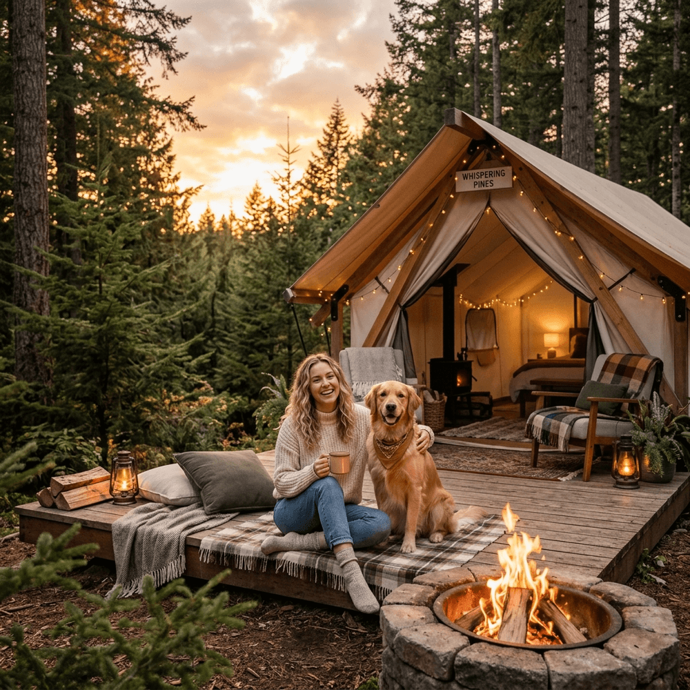

Merencanakan liburan seringkali menjadi dilema terbesar bagi para pemilik hewan peliharaan (paw parents). Mengurung mereka di kandang *pet care* kota seringkali membuat liburan kita sendiri menjadi dipenuhi rasa cemas yang kurang nyaman.
Kabar baiknya, Anda kini tidak perlu lagi meninggalkan anjing, kucing, atau peliharaan sahabat setia Anda sendirian ketika memburu eksotisme udara puncak pegunungan! Batu Sunrise Camp merupakan satu dari sedikit sekali pengelola lahan kemping modern yang berani mengkampanyekan wisata 100% Pet Friendly untuk kawasan Jawa Timur, demi menyempurnakan anggota keluarga pelancong agar lengkap tiada satu pun yang tertinggal.
1. Mengapa Liburan Bersama Hewan Peliharaan Sangat Membekas?
Untuk masyarakat perkotaan, peliharaan anak bulu merupakan penyeimbang beban kewarasan jiwa. Aktivitas rutin harian seperti berlari pelan mengejar capung liar, menginjak empuknya rerumputan berembun, dan meregangkan bulu tanpa terkurung di ruangan AC sempit akan menjadi hadiah terindah—bukan hanya buat sang pemilik—namun, bagi si anabul liar itu sendiri.
Lanskap Batu Sunrise Camp sangat ideal dengan tingkat kelandaian datar yang luas tanpa dipenuhi tebing jurang menukik, sehingga mengurangi resiko si anabul terperosok ke tepi batas tebing. Inilah surga kebebasan fisik yang nyata melampaui taman anjing komersial kota yang kaku terbatasi dinding pagar.
2. Tips Emas Membawa Peliharaan Berkamping Aman
Meskipun pihak tempat wisata telah mengangguk setuju (pet friendly), para paw parents tentu saja wajib menyiapkan serentetan skenario agar liburan semua pihak di alam liar aman menyenangkan.
Persiapkan Pet Cargo dan Selimut Ekstra
Bulu tebal seekor ras Siberian Husky atau Alaskan Malamute mungkin cocok diterpa udara dataran Gunung Batu, namun kucing persia rumahan atau jenis anjing kecil berbulu tipis pasti akan menderita kedinginan mendadak (hipotermia). Selalu pastikan Anda membawa bed atau *pet cargo* yang diperlengkapi lapisan *polar fleece*/karpet bulu tebal sehingga mereka juga berhak menikmati jam tidur sedamai tuannya di dalam glamping tenda yang bersih.
Berikan Pengikat atau GPS Collar (Alat Pelacak)
Jangan terlena melepaskan naluri liarnya kelewat batas. Terlebih saat menjejaki wilayah vegetasi lebat (teritorial asing) atau bersinggungan dengan penghuni satwa endemis kawasan rimba seperti monyet atau ayam hutan liar. Menghindari lenyapnya kesayangan Anda tanpa jejak karena hilang fokus mengejar tupai ke tepian hutan lebat, mengikat mereka (leash walking) terutama malam hari saat cuaca gelap merupakan protokol keharusan hukum alam.
3. Etika Pet-Friendly di Batu Sunrise Camp
Berbaur layaknya tamu VIP juga berarti membawa kesiapan merespek sesama tamu. Terdapat regulasi dasar standar yang telah dicetus penyelenggara Batu Camp untuk memitigasi selisih pendapat pelancong reguler dengan kelompok *paw parents*:
- Operasi Tangkap Kotoran (Poop-bag): Sangat diharamkan membiarkan si meong atau anjing meninggalkan ranjau coklat membusuk di areal hijau fasilitas kemah orang lain. Siapkan poop bag portable di selipan celana Anda senantiasa!
- Responsibilitas Anti-Bising Ekstrim: Apabila peliharaan Anda menyalak tanpa putus di luar kendali dan nyata mengganggu kemerdekaan kuping pengunjung lain kala fajar membelah keheningan sunyi, segeralah tarik menenangkannya ke pangkuan pribadi di areal yang dijauhkan sedikit.
- Gunakan Fasilitas Khusus Cermat: Dilarang keras memakai peralatan makan pengelola seperti panci maupun piring glamping untuk dijadikan lapak minum si anabul kesayangan. Mohon bawa terpisah wadah makan anjing/kucing secara mandiri.
4. Kesimpulan: Bebaskan Hati dengan Paket Komplit
Berhentilah membebani pikulan batin nurani tatkala mem-boarding hewan di pengasingan ruko pet-shop. Kemas pelana tas mereka dan masukan kerangkeng mereka ke jok mobil Anda! Memantau lidah lucu mereka terjulur girang di samping perapian unggun dengan siraman sosis bakar kecil bersama rombongan keluarga adalah fragmen paling berharga yang akan awet puluhan tahun di lipatan album hati Anda.
5. FAQ - Hewan Peliharaan di Area Camping
Adiel Ebert Nakula Shandy
Senior Outdoor Enthusiast & Web Developer. Pencinta kucing putih bengal dan pecandu kegiatan di luar ruangan.